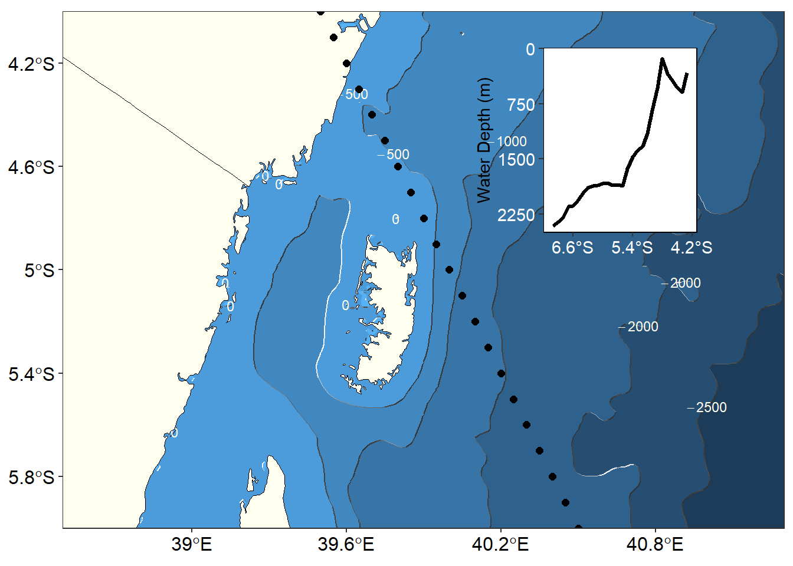

Chapter 12 Sea Surface Temperature
Global geophysical measurements from passive microwave radiometrs provide key variables for scientists and forecasters. The daily measurement of sea surface temperature (SST), sea surface height, wind speed and direction, water vapor, cloud liqueid water, rain rate and sea surface salinity over the oceans provided data sets used to improve of the physical processes driving climate and weather.
Sea surface temperature is a key climate and weather measurement routinely made each day by satellite infrared (IR) and passive microve (PMW) radiometers. In–situ moored and drifting buoys, and ships opportunity complement satellite measured SST. Scientist use these combination f in–situ and satellite measured data to create daily global maps of SST, which are then used to predict changes in weather, forecast the ocean dynamics, and along the coastal zone to monitor fishres, pollution and tourism. Oceanographers, meteorogist and climate scientist use these satellite products too.
Wide and open access in near real time to many TIR satellite SST data products has been established in an operational like–manner using existing data user–driven distribution protocols, tools and services coordinated by the ERDDAP. This is a significant development.
Thermal–infrared (TIR) observations from satellites provide sea surface temperature (SST) at horizontal resolution ranging from 1 to 6 km and a temporal resolution of either twice daily (for polar–orbiters) or up to half–hourly for geostationary satellites. In the absence of cloud, thermal–ifrared radiometers such as AVHTT and MODIS on polar-orbiting satellites provide twice daily repeat measurements of SST and the 1km spatial resoltuion currently avaialble from a satellite.
There are many operational meteorogical, oceanographic and ecosystem management systems that use SST data from TIR satellite sensors.
With today’s modern satellite sensors, many oceanic parameters are obtained from space. Of these , only sea surface temperature (SST) from the Advanced Very High Resolution Radiometer (AVRR) series on board the NOO polar-orbiting satellites enjoys an unbroken, nearly 30–years long history of observation from the same class of instrument.
12.1 Annual Mean Sea Surface Temperature
The global distribution of sea surface temperature is shaped by both radiative and dynamical factors relating to the pattern of seasonally varying, climatological–mean surface wind field over the oceans (Fig wind). Radiative heating is the dominant factor. That incident solar radiatio is so much sronger in the tropics than in the plar regions gives rise to a strong north-south temperature gradient, which dominates the annual-mean field shown in figure 12.1a & 12.1b
Figure 12.1: Annual mean sea surface temperature at the surface
12.2 Anomaly of sea surface temperature
The effect of winds on the sea surface temperature pattern bcome more cleraly apparent when the zonally averged sea surfae temperature at each latitud is removed from the mean field, leaving just the departure from the zonal-mean, shown in figure 12.2. Figure 12.2 clearly show that the eastern side of the oceans are relatively cooler than the western side. We also notice that the upwelling areas are clearly visible in figure 12.2. These feature are hidden if you rely on the actual value of the sea surface temperature shown in figure 12.2.
The chunk below highlight the lines of code used to calculate the zonal departure (anomaly) of sea surface temprature from the mean-zonal. The comment in the before the line of code in the chunk briefly explain what each line in the loop does.
Figure 12.2: center
Figure 12.3: Climatological zonal annual sea surface temperature anomaly in the Indian Ocean
12.3 Precipitation
Create a vector object of names of the months arranged according to order of files in the directory. This is important because want to ensure the right file is processed. However, the order will be changed and arranged according to the calender when we want to animate or plot the precipation rate in temporal series.

12.4 WInd speed and direction
Figure 12.4: Climatological Wind speed and direction in the Indian Ocean for January
Figure 12.5: Climatological Wind speed and direction in the Indian Ocean for July
12.5 air temperature
List of all files of air temperature from the working directory
Create a vector object of names of the months arranged according to order of files in the directory. This is important because want to ensure the right file is processed. However, the order will be changed and arranged according to the calender when we want to animate or plot the precipation rate in temporal series.
Read the file with raster::raster(air.files[j]) and convert it to data frame with raster::as.data.frame(xy = TRUE). After changing the variable names with ``rename(lon =x , lat = y , temperature= 3) and create a month variable, the value of air temperature we limited to the study area domain with filter(lon > 25 & lon < 135 & lat > -45 & lat < 35). air.temp is list with twelve data frame—each with several rows and columns. To stich the data frame rowside, we used the air.temp %>% bind_rows() and assign the product as air.temp.tb = air.temp
Figure 12.6: Air temperature of the Indian Ocean for January
Figure 12.7: Air temperature of the Indian Ocean for July
12.6 Zonal anomaly of air temperature
To calculate the zonal anomaly of air temperature, we first have to calculate the climatological mean air temperature with the code below.
Once we obtain the climatological mean, we can now compute air temperature anomaly at each latitude. First we obtain the unique latitude value using the Lat = air.temp.clim$lat %>% unique() and create a dummy files that will contain a data frame of anomalies computed at each latitude.
Figure 12.8: Annual mean departure of air temperature from zonal average
The zonal average air temperature shown in figure 12.8 like the zonal average sea surface temperature (Figure 12.3), both show small departure from the mean across the area where the EACC path. These is also the area that wind speed is strong during January (Figure 12.4) and July (Figure 12.5).
An interesting scientific question is which physical processes are responsible for the departure of the SST in the region. The acceleration of the near-surface water particles computed from drogued drifters is significantly larger in the near-shore strip and where small changes of temperature occur (refer the circulation figure here). The implication of this finding is that the departure of sea surface temprature is smaller in the areas of strong surface current than elsewhere.
Direct velocity observations from Lagrangian GDP drifters are therefore particularly important in regions where the departure from sea surface temperature is smaller. The residence time of the drifters in the CCS is short especially near the coast because the surface flow there is highly divergent. Long-term and sustainable deployment programs